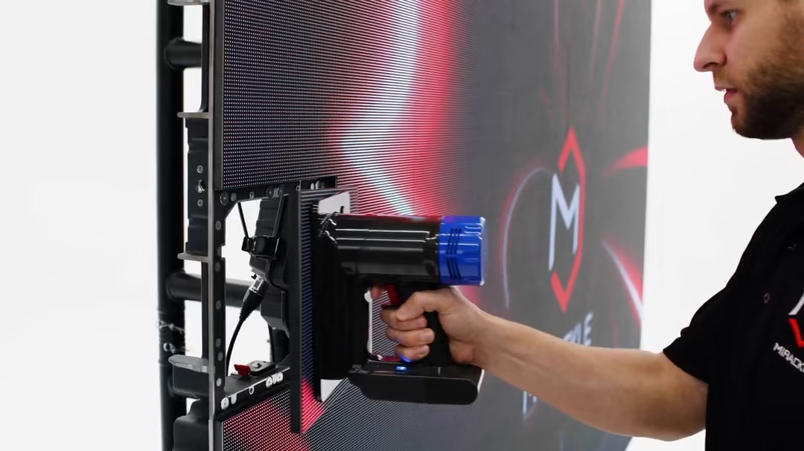
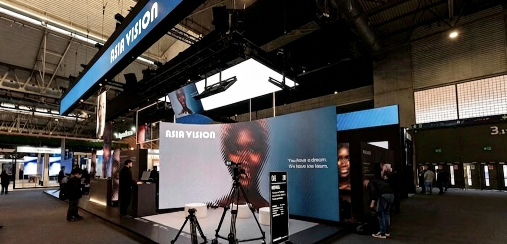

By Cassie
What does a Brazil LED display importer need to know? Importing LED displays into Brazil requires the RADAR registration, compliance with ANATEL or INMETRO requirements where they apply, and a landed cost model that accounts for a layered tax structure. This 2026 guide explains each step.
Brazil is the largest LED display market in South America, with demand from retail, events, transport, and public projects. The import process is structured, and the tax burden is a substantial part of the landed cost, so the budget model matters as much as the supplier choice.
A Brazil LED display importer who completes the registrations before ordering and models the full tax burden avoids the two most common problems: cargo held at the port and a landed cost that erases the margin.
Before the paperwork, it helps to know who is actually buying LED displays in this market — the demand pools are not identical, and they buy differently.
| Demand pool | What they buy | How they buy |
|---|---|---|
| Retail and shopping centres | Indoor signage, atrium screens | Large mall sector, brand-driven |
| Events and shows | Rental walls | Strong festival and concert market |
| Industry and agriculture | Control rooms, information displays | Industrial and agribusiness applications |
| Advertising and DOOH | Large-format outdoor panels | Significant DOOH segment |
Brazil carries the most complex tax structure in Latin America, so landed-cost modelling and correct customs classification matter more here than almost anywhere else. For events, the rental segment is particularly active.
Importing into Brazil requires registration in the RADAR system, which records the company's ability to operate in foreign trade. Without it, goods cannot be cleared. Registration is granted with a credit limit that varies by company size, and the limit constrains how much can be imported at once.
Apply early and check the limit against the planned order. A large shipment may exceed a limited capacity, in which case the order must be split or the limit increased. Discovering this after the goods have shipped creates storage charges that are difficult to recover.
| Step | What Is Required | Who Handles It |
|---|---|---|
| RADAR registration | Foreign trade registration with a credit limit | Importer |
| Import licence | Where required for the product | Importer |
| ANATEL certification | Approval for equipment with communication capability | Supplier with importer support |
| INMETRO conformity | Certification where applicable | Supplier with importer support |
| Customs declaration | Entry with classification and value | Broker |
| Tax payment | Federal and state taxes | Importer |
Work with a customs broker who understands electronic goods. The classification of displays, power supplies, control cards, and mounting steel differs, and each line carries its own treatment.
Electronic products with communication capability fall under ANATEL rules, and LED displays with network or wireless control may require certification. Other products fall under INMETRO conformity requirements, and the applicable regime depends on the product and its features.
Confirm the requirement for the specific model before ordering. Ask the supplier for the test reports and technical documentation needed for certification, because a model without supporting evidence cannot be registered, and an unregistered product cannot be sold lawfully.
| Requirement | What It Covers | Evidence to Hold |
|---|---|---|
| ANATEL certification | Equipment with communication capability | Certificate for the offered model |
| INMETRO conformity | Compliance with the applicable standard | Certificate where applicable |
| Safety test report | Electrical safety of the equipment | Report naming the model |
| EMC test report | Electromagnetic compatibility | Report naming the model |
| Technical file | Drawings and specifications | Complete file held by the importer |
| Portuguese labelling | Product information for the market | Label artwork |
Confirm which regime applies before the order rather than after. Certification takes time, and a model that requires ANATEL approval cannot be sold until the certificate is issued.
Brazil applies a layered tax structure to imports, including federal duties and contributions plus a state-level tax. The combined burden is substantial, and it can multiply the effective cost of a screen compared with the ex-works price.
| Cost Element | Basis | Notes |
|---|---|---|
| Import duty | Commodity code and value | Federal tax on the customs value |
| Industrial products tax | Value plus duty | Adds to the tax base |
| Social contributions | Value plus duty | Adds to the tax base |
| State tax | Value plus other taxes | Varies by state |
| Broker and port fees | Per shipment | Varies by broker and gateway |
| Inland transport | By distance and size | Confirm delivery to site |
Model the landed cost before comparing suppliers, because the tax structure amplifies any price difference. A screen that is ten percent cheaper ex-works may not be ten percent cheaper landed once the layered taxes are applied.
Confirm which taxes are recoverable for the specific importer status. Recovery terms depend on the tax registration and on the nature of the purchase, so the cash flow effect differs between a distributor and an end user.
Brazil combines tropical heat and humidity in the north with temperate conditions in the south, and the power supply is 127 or 220 volts depending on the region. A screen must be specified for the site rather than for the country as a whole.
For Brazilian sites, humidity and salt-laden air make sealed cabinets the deciding factor: the COB EF outdoor series (IP65, 3000 nits) and the COB ZH touring series (sealed, 3400–4000 nits) are built for exactly this duty.
Confirm the voltage and frequency at the installation before ordering the power supplies, because a screen set for the wrong voltage will fail. For coastal and northern sites, add corrosion protection and confirm the humidity rating.
| Condition | Risk | Specification Response |
|---|---|---|
| Northern heat and humidity | Corrosion and thermal stress | Sealed cabinets and corrosion protection |
| Coastal salt air | Accelerated corrosion | Corrosion-protected hardware |
| Southern temperate climate | Less demanding, but cold snaps occur | Standard outdoor rating |
| 127 or 220 volt supply | Failure if the wrong voltage is supplied | Confirm voltage before ordering |
| Rainy season | Water ingress on outdoor screens | High ingress rating and drainage |
| Unstable supply in some regions | Driver damage | Power conditioning on site |
Add the voltage check to the purchase order as a written requirement. It is the specification detail most often assumed rather than confirmed, and the mistake is only discovered when the screen is powered up.
Ask every candidate the same questions and record the answers. For Brazilian projects the certification route and the tropical specification matter as much as the price, because an unregistered product cannot be sold and a screen rated for a temperate climate fails early.
| Question | What a Strong Answer Looks Like | Warning Sign |
|---|---|---|
| ANATEL or INMETRO route | Requirement confirmed for the model | Uncertainty about the regime |
| Test reports | Supplied for the offered model | Evidence promised later |
| Voltage configuration | Confirmed in writing | Assumed rather than confirmed |
| Tropical specification | Sealing and corrosion detail given | Temperate-market ratings only |
| Spare parts availability | Stated period in writing | No commitment given |
| Service response | Stated time by fault severity | Answer avoided |
Confirm the components in writing and require written approval for any substitution. A supplier facing a shortage may change a part quietly, and the change only appears when the screens arrive.
Each mistake is inexpensive to avoid during planning and costly after the goods land. A Brazil LED display importer who confirms the registrations, models the full tax burden, and specifies for the site avoids most of them.
Asia Vision Technology manufactures LED displays in Shenzhen and supplies importers, distributors, and contractors worldwide. Cabinets are produced with sealing and corrosion protection suited to tropical markets, and the factory supplies the technical documentation Brazilian importers need for certification.
For Brazilian projects the company supplies rental cabinets for events, fine pitch screens for retail and corporate work, and high-brightness outdoor displays for advertising. OEM and ODM production is available for distributors building their own range.
